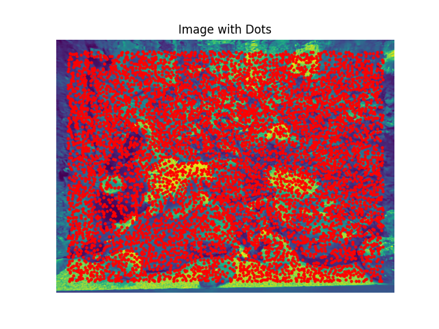
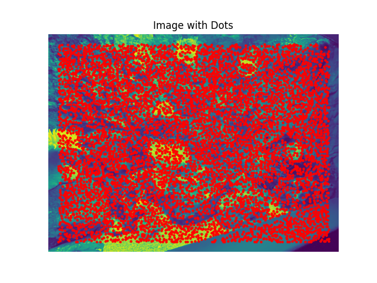

Auto-Stitching and Mosaicing
Aaron Zheng
Overview
In this project, we will be adding on to the image warping of the previous project, and we will be discovering how to put two images that are a perspective transform of each other together in such ways as to form a mosaic, or a panoramic view. First, we have to find the homography that best suits the two pairs of images, and then we will warp one image into the other's perspective, and combine them in intelligent ways.
Part 1: Image stitching with (manual) correspondences
Shoot the Pictures
For this project, I took many different pictures of places, including on the street next to my apartment, in Berkeley, and in tourist places. The 3 pairs of images that I will be showing are images that turned out pretty well. In the end of the page, I also include some pairs of images that did not turn out so well.
The left image will be known as image A, and the right is image B.
 |
 |
Recover Homographies
For this step, I defined point correspondences between the pairs of perspective transformed images, and using these I was able to derive a solution for the homography. A big problem I faced here was the great inaccuracy of using a direct least squares solution... directly using least squares was very unstable and always had errors of high magnitude.
So instead, I solved the expression by summarizing each point correspondence into two linear equations, putting them as rows into a matrix A, and taking the SVD of A. Then, the least squares problem just becomes the smallest eigenvector of A.
The left image is point correspondences on image A, and the right image is point correspondences on image B.
 |
 |
 |
Warp the Images
Here, I warped the images using the homographies defined above. It involved using the homography, expressed as a matrix, and multiply it by the image matrix. We define image A and image B, and one homography will convert image A to B. Likewise, the reverse homography will convert image B to A.
To make this work properly, I used the griddata function from scipy and took the coordinates of the corners of each image and applied it to the homography. This got me the "bounding shape" of the transformed image. Then, I create a new image frame which fits this "bounding shape", and transform the image into the shape. This way, no information is lost.
The left image is image A transformed into the perspective of image B, and the right image is vice versa.
 |
 |
 |
 |
 |
Image Rectification
Image rectification (making perspective transformed rectangles look like regular rectangles using homographies) is an interesting use case of image warping. Here, I rectified some images:
Rectification Building
Rectificied Result
Rectification Generic
Rectificied Result

Rectification (My Ipad)
Rectificied Result
Mosaic'ed Image
To blend images, I left one image unwarped, and the other warped. Then I transformed either one or both of the warped and unwarped images, in such a way that they fit nicely together. Then I added the two images together.
 |
 |
 |
 |
Using the alpha masks I created for both the warped and unwarped images, I was also able to do a laplacian blending of the two images, although this didn't turn out perfectly.
Failed Images
Below is an example of a failed image pair. This is one of the first images I took. The reason the mosaic of this image failed is because the perspective transform angle is too great.
Below are the original image A and B
 |
Below is the attempted image warping of A and B
 |
 |
Since the warping magnitude is so great, it is clear that this image pair cannot make a good mosaic.
Part 2: Image stitching with (automatic) correspondences
Harris Interest Point Detection
Here, I used the provided code, specifically the `get_harris_corners` function, and used it to obtain a bunch of harris corners. The principle behind this is that the harris corners are points where the edges go in opposite directions, and there is significant change in pixel intensities in all directions. . Each point in the image here has a designated `score`, determining its likelihood of being a corner.
Using the harris detection algorithm and the provided code, I was able to dot the corners on the images used in Part 1.
Below, we have the Harris corners image created with minimum distance 1, 5, and 10, for the three pairs of image. Each corner has the highest score in a radius of the minimum distance, either 1, 5, or 10.
Min dist = 1
|  |  |
Min dist = 5
 |
Min dist = 10
Below are some of the original images, along with their (normalized and equalized) corner density heat map (how likely they are to be corners)
Adaptive Non-Maximal Suppression
The idea here is that we will take each of the harris corners above, and using the points generated, we will rank the points by radius of greatest probability of being a corner, which is the radius of its coverage. The global maximum (i.e. the point which is the most likely to be a corner across all harris points) has a radius of infinity. The key caveat here is, we suppress the points under a certain threshold. We only reduce a corner point's radius of coverage (assuming this corner point has probability pc1) if there exists a corner point in a radius r with probability x, such that x * 0.9 > pc1. The 0.9 makes the results more versatile and dynamic to noise related flunctuations. We then only take the (C) points with the maximum radius of coverage, where C is a varied parameter.
Here are the relevant points (using mindist=5 for harris).
C = 50
C = 200
C = 300
 |
Feature Descriptor Extraction
Here, we get a 40x40 window around each of the points that we got from the Adaptive Non-Maximal Suppresesion step (we use the 300 point situation), and we condense this feature descriptor to an 8x8 grid. This 8x8 grid effectively gives (summarized) context around each image, allowing us to match relevant features.
We obviously will normalize each of the feature descriptors before using them, making the distribution a mean = 0 and std = 1 distribution.
Here are some examples of the features.
Feature Matching
Using the graph provided in the provided paper, for thresholding ratio, we pick the point in which the probability density of the curves `correct match` and `incorrect match` line up (i.e. are equal to each other). This way, if the ratio is less, it is more likely correct. If more, then more likely the match is incorrect.
With this regiment, the final matching feature points are as follows:
Image Pair 1 |
Image Pair 2 |
Image Pair 3 |
RANSAC
Although the results after feature matching look very good, we see that it is still not good enough. There are still many point pairings that do not match, and had we used this point pairing for homography calculation, it would be disasterous.
With RANSAC, we loop through a set number of iterations (here I used 1000). Each iteration, we pick 4 point corresepondences, calculate a homograrphy from these 4 points, and then calculate the number of inliers, i.e. the number of corresponding points between the two images that are within a set distance tolerance after the calculated homography. After the 1000 iterations, we choose the homography and the corresponding set of inliers, with the greatest number of inliers.
Point correspondences are as follows, after RANSAC
Image Pair 1 |
Image Pair 2 |
Image Pair 3 |
Final Results
Finally, with the automatically detected homography and corresponding points and using project 4a's mosaic'ing code, here are some results.
Good 'ish Results
Image Pair 1 |
Image Pair 2 |
Failed Results
Image Pair 3 |
Failed Results (but slightly better)
Image Pair 3 |
Overall, we see that the automatic corespondence machine really really struggled to align the last image pair, no matter how many times I reran the RANSAC algorithm. I believe this goes to show that automatic alignment algorithms are not completely robust, and can fail under certain circumstances. Here, I think the reason it failed is because of the nature of the image pair 3. It contains the flooring that is having many many corners, and the berkeley building it represents also is pretty standard in architecture where there are many many possible corners. Each of these corners could look very alike. It is also very sensitive to perturbations, so an off-placed image is very obvious.
Conclusion
This was a fun project, I very much enjoyed it. I learnt (and struggled) a lot, especially when it came to making the homography work, and combining the warped and unwarped images.
To my surprise, Part 2 was much more straightforward than Part 1, and took me way less time.
Coolest thing learned
I learnt that you can automatically mosaic images! This is very interesting to me: previously I thought the only way something of this sort could be accomplished was through fancy AI methods. Now I have learned that you can do it automatically with (arguably very very intuitive) methods, that rely on minimums and maximums and are generally straightforward to implement. I also learned about RANSAC, and I think it is a very cool concept. I really like the idea of getting some sort of trend from a dataset that may be very noisy, even though you don't know what that trend is. I think it is kind of like unsupervised learning from machine learning, which I have always found very fascinating.